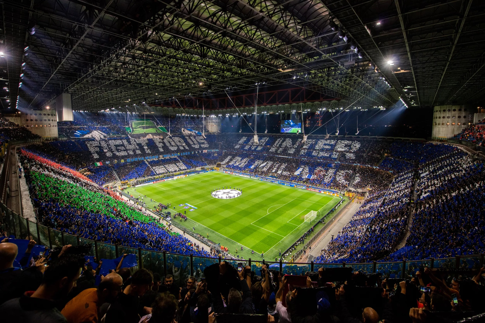
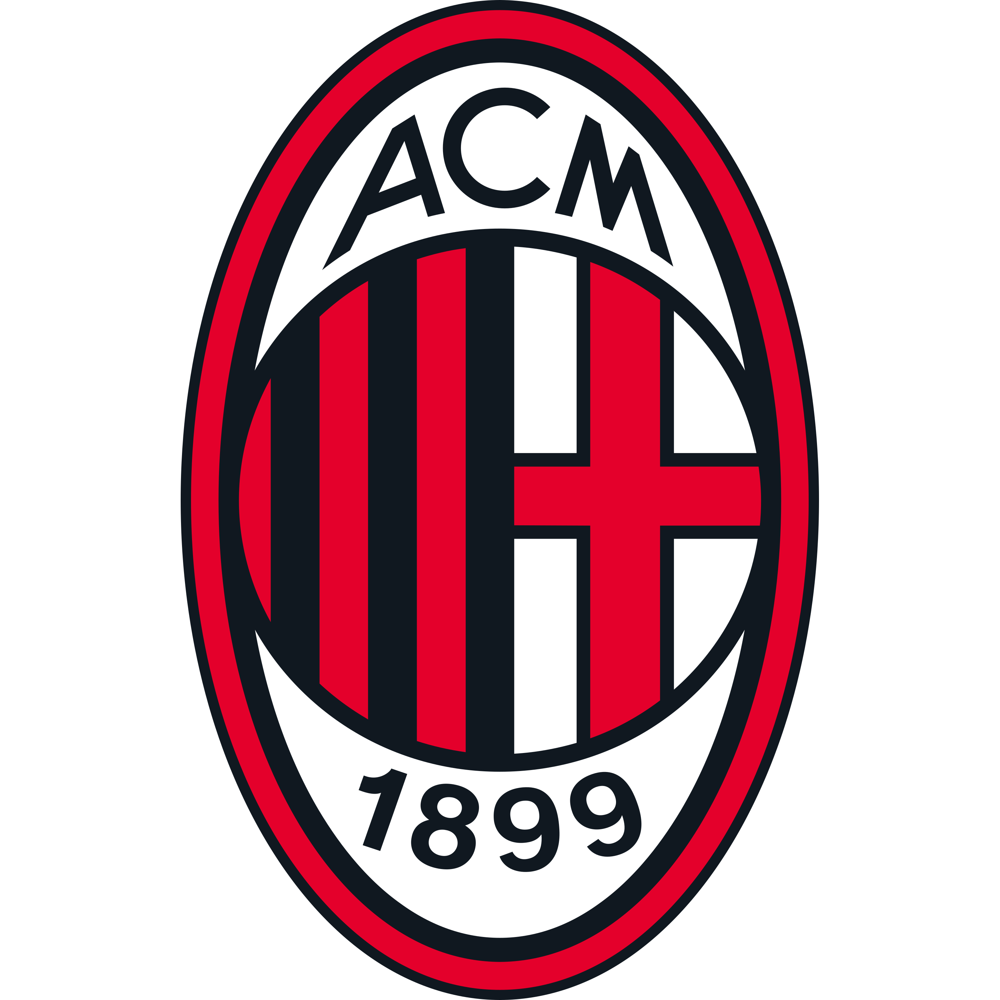

Inter - 68 punti
Fondato il 9 marzo 1908 da un gruppo di soci dissidenti del Milan, il club ha sempre militato nella massima serie del campionato nazionale a partire dalla propria prima partita ufficiale,nel 1909


Fondato il 9 marzo 1908 da un gruppo di soci dissidenti del Milan, il club ha sempre militato nella massima serie del campionato nazionale a partire dalla propria prima partita ufficiale,nel 1909

La fondazione del club avvenne di fatto il 25 agosto 1926 in seguito al cambio di denominazione del Foot-Ball Club Internazionale-Naples, società costituitasi nel 1922, in Associazione Calcio Napoli.


Fondato nel 1899 da un gruppo di inglesi e italiani,è uno dei club più antichi d'Italia, nonché uno dei più blasonati al mondo e con maggior tradizione sportiva. Indossa una divisa a strisce verticali di colore rosso e nero, da cui il soprannome di "rossoneri".


La tradizione sportiva del principale sodalizio calcistico comense, la 26ª a livello nazionale secondo i criteri della FIGC, iniziò nel 1907 con la nascita del Como Foot-Ball Club.


Fondata nel 1897 da un gruppo di studenti liceali locali,"la Juve", com'è colloquialmente abbreviata, è il secondo club professionistico per anzianità tra quelli tuttora attivi nel Paese, dopo il Genoa (1893).


Fondata nel 1927 grazie alla fusione di tre squadre, ha come colori sociali il rosso e il giallo, tonalità cromatiche corrispondenti al gonfalone del Campidoglio. A livello nazionale i Giallorossi, uno dei soprannomi che contraddistinguono la Roma insieme a Lupa e Magica.


Il punteggio riportato non è aggiornato qui c'è la classifica in tempo reale ⮕
Guida HTML/CSS